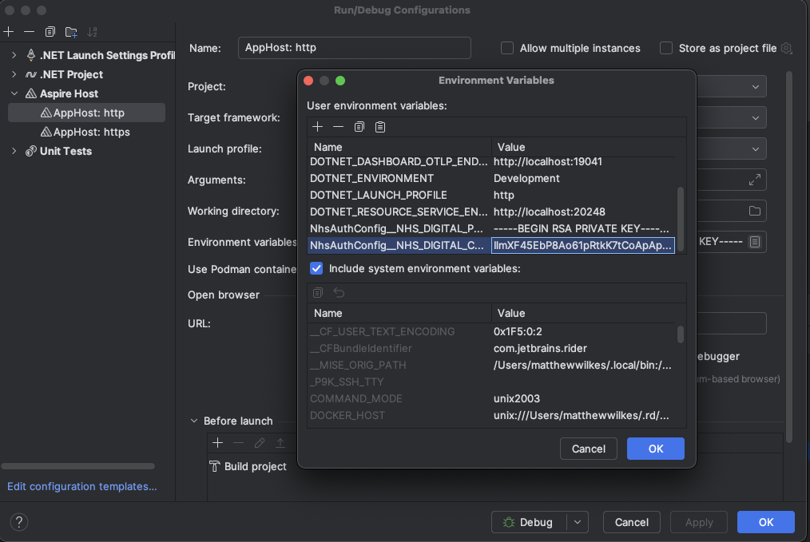

Getting started
Setting up an API credential
- On the NHS Developer site, create a new developer account, if you do not yet have one.
- Add a new application by going to environment access. Use the 'Integration test' and set yourself as the owner.
- Create a new API, linked to
Personal Demographics Service - Application-Restricted (Integration Testing). You will need to give this a globally unique name. - Generate a keypair, by running these commands (from the NHS documentation)
KID=test-1openssl genrsa -out $KID.pem 4096openssl rsa -in $KID.pem -pubout -outform PEM -out $KID.pem.pubMODULUS=$( openssl rsa -pubin -in $KID.pem.pub -noout -modulus `# Print modulus of public key` \ | cut -d '=' -f2 `# Extract modulus value from output` \ | xxd -r -p `# Convert from string to bytes` \ | openssl base64 -A `# Base64 encode without wrapping lines` \ | sed 's|+|-|g; s|/|_|g; s|=||g' `# URL encode as JWK standard requires` )echo '{ "keys": [ { "kty": "RSA", "n": "'"$MODULUS"'", "e": "AQAB", "alg": "RS512", "kid": "'"$KID"'", "use": "sig" } ] }' > $KID.json
- Upload the
test-1.jsonfile to your application's registration, on the 'Manage public key' page - On the API portal, create a new API key, and copy the Key value. You do not need the secret. Then run the following command, using your Key value between the quotation marks.
API_KEY="IlmDF45AbP8Ao11pRtkK7tCoApApdABC"
- Create the
.envfile to provide these secrets to the mocked Azure Secret Manager, by running the following commands:echo "export NhsAuthConfig__NHS_DIGITAL_PRIVATE_KEY=\"$(openssl rsa -in $KID.pem -traditional -out -)\"" > .envecho "export NhsAuthConfig__NHS_DIGITAL_KID=\"$KID\"" >> .envecho "export NhsAuthConfig__NHS_DIGITAL_CLIENT_ID=\"$API_KEY\"" >> .env
If you're using an IDE (such as Jetbrains Rider), you can add these environment variables to the AppHost run configuration, as follows: 
Pre-requisites
You must install the .net CLI and v9 SDK. For macOS, run:
curl -sSL https://dot.net/v1/dotnet-install.sh | bash -s -- --version 9.0.102 --install-dir "$HOME/.dotnet"
echo 'export PATH="$HOME/.dotnet:$PATH"' >> ~/.zshrc && source ~/.zshrc && echo $PATH
You should then be able to build the solution, using
dotnet build sui-matching.sln
Unit and integration testing
- To run the whole test suite via the terminal:
source .env
dotnet test --settings tests.runsettings
or individually:
source .env
cd sui-tests
dotnet test <path>/<to>/<test-class>
Running locally
To build and run the project:
dotnet build sui-matching.sln
dotnet run --project src/app-host/AppHost.csproj
curl -H 'Content-Type: application/json' \
-d '{ "given":"octavia","family":"chislett", "birthdate": "2008-09-20"}' \
-X POST \
http://localhost:5000/matching/api/v1/matchperson
matchStatus of 0 if this has been successful. A matchStatus of 4 indicates that there has been an error connecting to the PDS API.
If you have errors connecting to the aspire host page you may need to run the below commands:
dotnet dev-certs https --clean
dotnet dev-certs https --trust